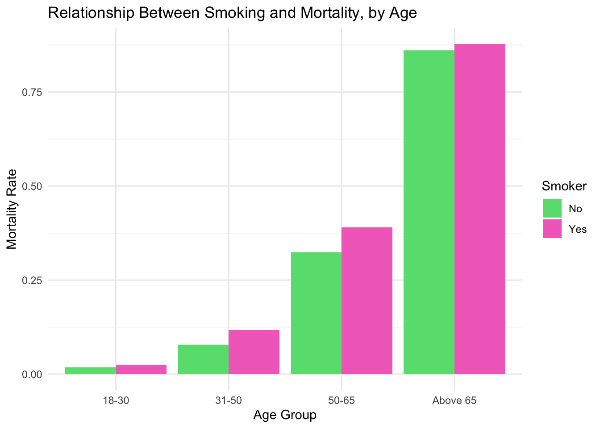

In this lab, you will work with observational data to assess the relationship between an exposure and the incidence of a disease.
You will practice bootstrap to calculate a 95%CI.
You will create an interactive web application with shiny.
Exercise 1:
The Whickham data set in the mosaicData package includes data on age, smoking, and mortality from a one-in-six survey of the electoral roll in Whickham, a mixed urban and rural district near Newcastle upon Tyne, in the United Kingdom. The survey was conducted in 1972–1974 to study heart disease and thyroid disease. A follow-up on those in the survey was conducted 20 years later. Describe the association between smoking status and mortality in this study. Be sure to consider the role of age as a possible confounding factor.
library(mosaicData)data("Whickham")Whickham <- Whickham %>%mutate(age_group =case_when( age >=18& age <=30~"18-30", age >30& age <=50~"31-50", age >50& age <=65~"50-65", age >65~"Above 65",TRUE~"Other" ) )mortality_rates <- Whickham %>%group_by(smoker, age_group) %>%summarise(mortality_rate =sum(outcome =="Dead") /n(), )ggplot(mortality_rates, aes(x = age_group, y = mortality_rate, fill = smoker)) +geom_bar(stat ="identity", position ="dodge") +labs(x ="Age Group", y ="Mortality Rate", fill ="Smoker") +ggtitle("Relationship Between Smoking and Mortality, by Age") +scale_fill_manual(values =c("Yes"="#F270C4", "No"="#65DE7E")) +theme_minimal()

As evident in my bar graph, smoking is generally associated with greater mortality, across age groups. The relationship weakens as age groups get older likely due to generally increasing mortality with age.
Exercise 2:
Calculate the mean age of birthing people from the Gestation data set from the mosaicData package.
If we repeated our sampling procedure a large number of times, we expect about 95% of the resulting confidence intervals to capture the value of the mean age of birthing people
Exercise 3:
Using data from the palmerpenguins package, create a Shiny app that displays measurements from the penguins dataframe. Allow the user to select a species or a gender, and to choose between various attributes on a scatterplot. (Hint: examples of similar apps can be found at the Shiny gallery).
library(palmerpenguins)data("penguins")library(shiny)# User interfaceui <-fluidPage(titlePanel("Let's Measure Some Penguins!"),sidebarLayout(sidebarPanel(# Text input widget for penguin speciesselectizeInput(inputId ="species",label ="Enter Penguin Species Here",choices =NULL,multiple =TRUE),p("Put single space between the species."),# Button input widget for penguin sexradioButtons(inputId ="sex",label ="Sex",choices =c("male", "female"),selected ="female"),# Button input widgets for measurement attributes#x variableradioButtons("x_var",label ="Select X Variable:",choiceNames =list("Bill Length", "Bill Depth", "Flipper Length", "Body Mass"),choiceValues =list("bill_length_mm", "bill_depth_mm", "flipper_length_mm", "body_mass_g"),selected =c("bill_length_mm"),inline =TRUE),#y variableradioButtons("y_var",label ="Select Y Variable:",choiceNames =list("Bill Length", "Bill Depth", "Flipper Length", "Body Mass"),choiceValues =list("bill_length_mm", "bill_depth_mm", "flipper_length_mm", "body_mass_g"),selected =c("bill_depth_mm"),inline =TRUE),submitButton("Update Results!") ),mainPanel(plotOutput(outputId ="graph") ) ))server <-function(input, output, session){updateSelectizeInput(session, 'species', choices =unique(penguins$species), server =TRUE) dat_penguins <-reactive({ penguins %>%filter(species %in%c(unlist(str_split(input$species, " "))), sex == input$sex) }) output$graph <-renderPlot({ggplot(data =dat_penguins(), mapping =aes(x = input$x_var, y = input$y_var, color = input$species)) +geom_point() })}# Creates appshinyApp(ui = ui, server = server)